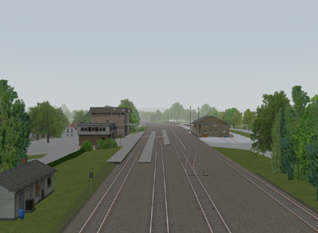
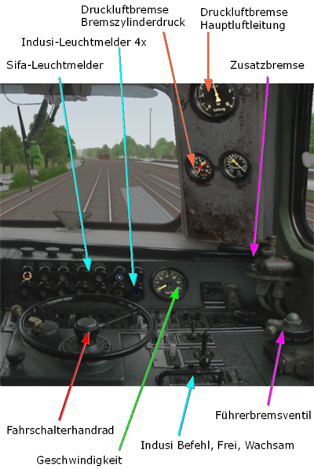
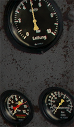

|
|
|
|
Herzlich willkommen beim Assistenten der Zusi-Demoversion. In diesem Fenster werden Ihnen während der Fahrt Hilfestellungen gegeben.
Sie übernehmen gleich den mit der Baureihe 216 bespannten Schnellzug D 2640 im Abschnitt zwischen Bad Driburg und Altenbeken. Die Strecke sehen Sie im Streckenplan. Mit dem Mausrad können Sie im Streckenplan hinein- und herauszoomen, um Details bis auf Gleisniveau zu sehen.
Da Zusi ein komplettes Streckennetz mit sämtlichen Zugfahrten berechnet, kann es wie hier passieren, dass Ihr Zug nach dem Start noch nicht in der Simulation unterwegs ist. Sie sehen dann den vorgesehenen Aufgleisbereich aus einer erhöhten Perspektive:

Die Funktion berechnet die Simulation im Schnelldurchgang ohne Grafikanzeige und kehrt in den normalen Simulationsmodus zurück, sobald der Zug auf das Gleis gesetzt wird. Weiterhin gibt es noch den , der die Simulation schneller laufen lässt und dabei auch die Grafik berechnet und anzeigt.
Aktivieren Sie jetzt den und nach wenigen Sekunden finden Sie sich im Führerstand des Zuges.
Ihr Zug soll ca. 4 Minuten nach dem Aufgleisen abfahren. Wenn
diese Zeit zum Durchlesen der Erläuterungen zu knapp ist, rufen
Sie einmal
 auf, dann wird die
Simulationszeit angehalten. Durch nochmaliges Drücken wird die
Pause wieder aufgehoben.
auf, dann wird die
Simulationszeit angehalten. Durch nochmaliges Drücken wird die
Pause wieder aufgehoben.
Bevor Sie Ihre Fahrt beginnen, sollten Sie sich kurz mit den wichtigsten Instrumenten auf dem Führerstand vertraut machen. Die herausgehobenen Instrumente werden unten erläutert:

Wenn Sie sich die Strecke erst einmal vorfahren lassen möchten, dann drücken Sie . Der Computer fährt dann den Zug - erneutes Drücken schaltet den Autopilot wieder aus. Der Autopilot ist auch eine gute Hilfe, wenn man den Zug gar nicht mehr in Bewegung bekommt, da er Lok und Zug wieder in den Grundzustand versetzt. In den folgenden Hilfestellungen sind die Bedienelemente und Sicherungssysteme nur knapp beschrieben, für weitergehende Informationen schauen Sie bitte in die Dokumentation.
Für alle Schalter und Hebel können Sie sowohl die zugeordneten Tasten auf der Tastatur als auch die Maus benutzen. Mit der Maus müssen Sie die Grafik des Schalters anklicken, wobei die linke Taste je eine Stufe in die eine und die rechte je eine Stufe in die andere Richtung schaltet.
Im Führerstand stehen weitere Ansichten zur Verfügung, die Sie über die Pfeiltasten (außerhalb des Zehnerblocks) erreichen.
Über 15 Fahrstufen wird die gewünschte Motorleistung eingestellt (Pfeiltasten im Zehnerblock oben/unten, Ziffer 5 schaltet sofort auf Fahrstufe 0).
Die Bremsung wird über ein Druckluftsystem ausgeführt, dessen Zustand Sie am Zeiger des Bremszylinder-Manometers ( unteres, linkes Manometer , gelber Pfeil ) ablesen können: 0 bar bedeutet keine Bremskraft, je höher der Druck, desto stärker wird gebremst.

Gesteuert werden die Bremszylinder über die Hauptluftleitung, deren Druck Sie an dem gelben Zeiger des oberen Manometers ablesen können. Im normalen Betrieb liegt der Druck in der Hauptluftleitung zwischen 5 bar (Bremse ist gelöst) und 3,5 bar (volle Bremskraft). Druckwerte in der Hauptluftleitung außerhalb dieses Bereichs wirken sich nicht weiter erhöhend/verringernd auf die Bremskraft aus.
 Das obere Bild zeigt die Bremse im gelösten Zustand
(Hauptluftleitung 5 bar, Bremszylinder 0 bar)
Das obere Bild zeigt die Bremse im gelösten Zustand
(Hauptluftleitung 5 bar, Bremszylinder 0 bar)
Das untere Bild zeigt die Bremse im voll angelegten Zustand
(Hauptluftleitung 3,5 bar, Bremszylinder ca. 4 bar)
 Die Ansteuerung des Drucks geschieht über das
Führerbremsventil, das den Druck in der Hauptluftleitung je nach
Stellung in feinen Stufen zwischen 5 und 3,5 bar regelt. Das
erste Bild zeigt die Fahrtstellung, die den Druck auf 5 bar
regelt.
Die Ansteuerung des Drucks geschieht über das
Führerbremsventil, das den Druck in der Hauptluftleitung je nach
Stellung in feinen Stufen zwischen 5 und 3,5 bar regelt. Das
erste Bild zeigt die Fahrtstellung, die den Druck auf 5 bar
regelt.
 Das zweite Bild zeigt die
Vollbremsstellung (3,5 bar). Das Ventil wird mit
Plus-/Minus-Tasten
(Zehnerblock)
von Stufe zu Stufe weitergeschaltet. Jedes
Drücken der Plustaste senkt den Druck in der Hauptluftleitung
eine Stufe weiter ab, womit die Bremskraft entsprechend erhöht
wird.
Das zweite Bild zeigt die
Vollbremsstellung (3,5 bar). Das Ventil wird mit
Plus-/Minus-Tasten
(Zehnerblock)
von Stufe zu Stufe weitergeschaltet. Jedes
Drücken der Plustaste senkt den Druck in der Hauptluftleitung
eine Stufe weiter ab, womit die Bremskraft entsprechend erhöht
wird.
Zusatzbremse
Die Zusatzbremse wirkt nur auf der Lok und dient zum Festhalten des Zuges im Stand. Sie können jetzt das Führerbremsventil auf "Fahrt" stellen und den Zug mit der Zusatzbremse festhalten (#-Taste 2x Drücken), als Kontrolle muß der Bremszylinderdruck (gelber Zeiger im Manometer links unten) steigen.
Geschwindigkeit
Hier sehen Sie Ihre aktuelle Fahrgeschwindigkeit.
Die Sifa überprüft, ob der Lokführer noch bei Bewusstsein ist ("Totmannschalter"). Dazu muß je nach Bauart ca. alle 20 bis 40 Sekunden die Sifataste (Leertaste) gedrückt werden. Wenn das vergessen wird, leuchtet zunächst die Sifa-Lampe auf, nach ein paar Sekunden ertönt die Sifa-Hupe. Wenn dann die Taste immer noch nicht betätigt wird, erfolgt eine Zwangsbremsung, die durch nachträgliches Betätigen der Sifa sofort wieder aufgehoben wird.
Das Indusi I60-System überwacht die Beachtung der Signale. Nähere Erläuterung erfolgt während der Fahrt.
Um den Fahrplan einhalten zu können, finden Sie links neben den Leuchtmeldern eine Uhr auf dem Führerstand (oben im Übersichtsbild nicht zu sehen).
Der Buchfahrplan im separaten Fenster zeigt dem Lokführer die erlaubten Geschwindigkeiten und die vorgesehenen Fahrzeiten für diesen Zug. Eine näherere Erläuterung erfolgt während der Fahrt.

Jede Strecke ist mit Streckenkilometern versehen, auf die sich dann u.a. der Buchfahrplan bezieht. Die Kilometrierung finden Sie alle 200m auf weißen Tafeln am Streckenrand.
Mit F8 können Sie die Schummelinfo ein-/ausblenden, die Informationen zeigt, die dem realen Lokführer nicht zur Verfügung stehen, Ihnen aber gerade am Anfang nützliche Hilfestellung leisten können.
Mit diesen Grundinformationen sollten Sie die Fahrt beginnen
können. Wenn Sie unterwegs eine Pause einlegen
möchten, um z. B. einen Textabschnitt in Ruhe lesen zu können,
dann rufen Sie
 auf,
nochmaliges Drücken der Taste setzt die Simulation fort. (Keine
Angst um die Einhaltung Ihres Fahrplans - die Uhr wird natürlich
solange angehalten.)
auf,
nochmaliges Drücken der Taste setzt die Simulation fort. (Keine
Angst um die Einhaltung Ihres Fahrplans - die Uhr wird natürlich
solange angehalten.)
Hier endet die Einführung, warten Sie auf den Abfahrtauftrag!
Die weiteren Hilfen werden interaktiv während der Fahrt eingeblendet.
 Halt: Das Signal
darf nicht überfahren werden.
Halt: Das Signal
darf nicht überfahren werden.